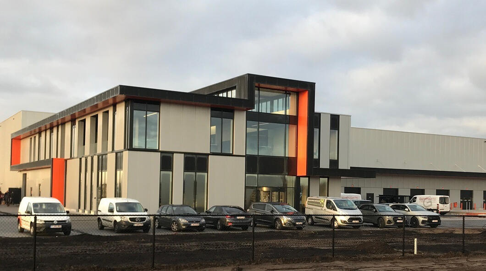

VanZon
Mijn dag vandaag startte om 8.30. Ik werd opengepikt door mijn stagebegeleider om samen naar Lommel te rijden. Wij gingen in Lommel Horeca Van Zon bezoeken. Dit bedrijf is een van de grote partners van TCOG. Ik gebruik het woord partner omdat ze zichzelf niet zien als leveranciers maar als partners.
Toen ik daar was heb ik een korte rondleiding gekregen in het bedrijf. Ze hebben me laten zien hoe TCOG hier al voor heel veel innovatie heeft gezorgd en welke voordelen dat allemaal oplevert. Een van die dingen was bijvoorbeeld voice picking. Dat is een apparaatje gekoppeld aan een koptelefoon met micro. Het word gebruikt in het magazijn om vlot orders te maken. In de koptelefoon word er gezegd in welke gang op welke plaats bepaalde producten liggen en zo kunnen ze sneller te werk gaan.
Na de rondleiding was het tijd voor middageten, deze duurde van 12:30 tot 13:30. Voor de beloofde frietjes moest ik vrijdag terugkomen maar de chocomousse heeft me ook zeker gesmaakt.
In de namiddag heb ik uitgebreid uitleg gekregen over de verschillende functies binnenin het bedrijf en hoe deze allemaal samenwerken om een mooi resultaat te bereiken. Blijkbaar werd er vroeger veel meer verwacht van 1 persoon op alle vlakken maar is het tegenwoordig meer de bedoeling om 1 specialist te hebben voor elk vak.
Ook heb ik uitleg gekregen over releasebeheer en hotfixes, er was de afgelopen nacht een update geweest en blijkbaar was niet alles gelopen als gehoopt. Toen zijn we opzoek gegaan naar waar de fouten kunnen zitten en hoe we deze kunnen oplossen. Ik vind het straf hoe mijn stagebegeleider hierin zo rustig kon blijven, als ik een fout maak in een code waardoor er iets niet werkt en ik de fout moet zoeken heb ik het meestal lastiger om rustig te blijven…
Na al deze uitleg was het al weer tijd om af te sluiten en huiswaarts te keren. Vandaag heb ik een hele dag samengezeten met een consultant, ik hoop dat ik ook 1 van de dagen een inkijk kan hebben in een dag van een developer. Dat zou een mooie ervaring zijn.